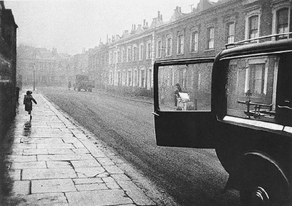

이차 프레임
지문을 먼저 읽고, 이해가 막히는 문단에서 ‘그림으로 보기’를 누르세요. 그림은 문단을 따라 바뀝니다.
1문단프레임(frame)은 영화와 사진 등의 시각 매체에서 화면 영역과 화면 밖의 영역을 구분하는 경계로서의 틀을 말한다. 카메라로 대상을 포착하는 행위는 현실의 특정한 부분만을 떼어 내 프레임에 담는 것으로, 찍는 사람의 의도와 메시지를 내포한다. 그런데 문, 창, 기둥, 거울 등 주로 사각형이나 원형의 형태를 갖는 물체들을 이용하여 프레임 안에 또 다른 프레임을 만드는 경우가 있다. 이런 기법을 ‘이중 프레이밍’, 그리고 안에 있는 프레임을 ‘이차 프레임’이라 칭한다.
2문단이차 프레임의 일반적인 기능은 크게 세 가지로 구분할 수 있다. 먼저, 화면 안의 인물이나 물체에 대한 시선 유도 기능이다. 대상을 틀로 에워싸기 때문에 시각적으로 강조하는 효과가 있으며, 대상이 작거나 구도의 중심에서 벗어나 있을 때도 존재감을 부각하기가 용이하다. 또한 프레임 내 프레임이 많을수록 화면이 다층적으로 되어, 자칫 밋밋해질 수 있는 화면에 깊이감과 입체감이 부여된다. 광고의 경우, 설득력을 높이기 위해 이차 프레임 안에 상품을 위치시켜 주목을 받게 하는 사례들이 있다.
3문단다음으로, 이차 프레임은 작품의 주제나 내용을 암시하기도 한다. 이차 프레임은 시각적으로 내부의 대상을 외부와 분리하는데, 이는 곧잘 심리적 단절로 이어져 구속, 소외, 고립 따위를 환기한다. 그리고 이차 프레임 내부의 대상과 외부의 대상 사이에는 정서적 거리감이 ⓐ조성(造成)되기도 한다. 어떤 영화들은 작중 인물을 문이나 창을 통해 반복적으로 보여 주면서, 그가 세상으로부터 격리된 상황을 암시하거나 불안감, 소외감 같은 인물의 내면을 시각화하기도 한다.
4문단마지막으로, 이차 프레임은 ‘이야기 속 이야기’인 액자형 서사 구조를 지시하는 기능을 하기도 한다. 일례로, 어떤 영화는 작중 인물의 현실 이야기와 그의 상상에 따른 이야기로 구성되는데, 카메라는 이차 프레임으로 사용된 창을 비추어 한 이야기의 공간에서 다른 이야기의 공간으로 들어가거나 빠져나온다.
5문단그런데 현대에 이를수록 시각 매체의 작가들은 ㉠이차 프레임의 범례에서 벗어나는 시도들로 다양한 효과를 끌어내기도 한다. 가령 이차 프레임 내부 이미지의 형체를 식별하기 어렵게 함으로써 관객의 지각 행위를 방해하여, 강조의 기능을 무력한 것으로 만들거나 서사적 긴장을 유발하기도 한다. 또 문이나 창을 봉쇄함으로써 이차 프레임으로서의 기능을 상실시켜 공간이나 인물의 폐쇄성을 드러내기도 한다. 혹은 이차 프레임 내의 대상이 그 경계를 넘거나 파괴하도록 하여 호기심을 자극하고 대상의 운동성을 강조하는 효과를 낳는 사례도 있다.
위 글을 바탕으로 <보기>를 이해한 내용으로 가장 적절한 것은?

사진: 안개 낀 거리. 오른쪽 앞에 열린 자동차 뒷문의 창이 멀리 있는 한 인물을 테두리 짓고 있다">1950년대 어느 도시의 거리를 담은 이 사진은 ㉮자동차의 열린 뒷문의 창이 우연히 한 인물을 테두리 지어 작품의 묘미를 더하는데, 이는 이중 프레이밍의 전형적인 사례이다.